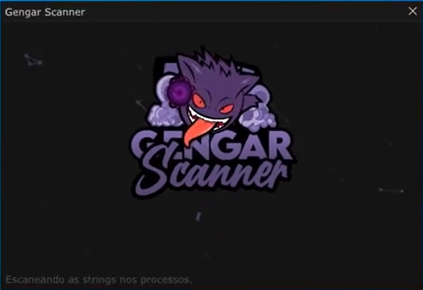

Gengar Scanner
Este programa é um scanner visando encontrar hacks, cheats e malwares no computadores de players de GTA RP. Desenvolvi-o utilizando C# bruto, já o site de vendas do mesmo foi usado HTML, CSS e Javascript.
Veja no siteEste programa é um scanner visando encontrar hacks, cheats e malwares no computadores de players de GTA RP. Desenvolvi-o utilizando C# bruto, já o site de vendas do mesmo foi usado HTML, CSS e Javascript.
Veja no siteEste programa é um camuflador de programas usado para esconder qualquer tipo de .bat ou .exe no seu computador. Desenvolvi-o usando C++. O site criado para as vendas foi utilizando HTML, CSS e Javascript
ㅤ
Veja no site